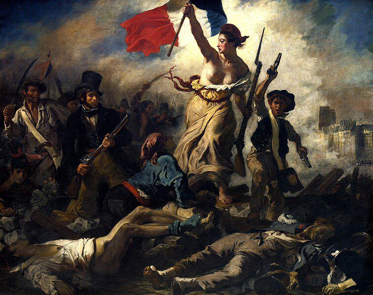
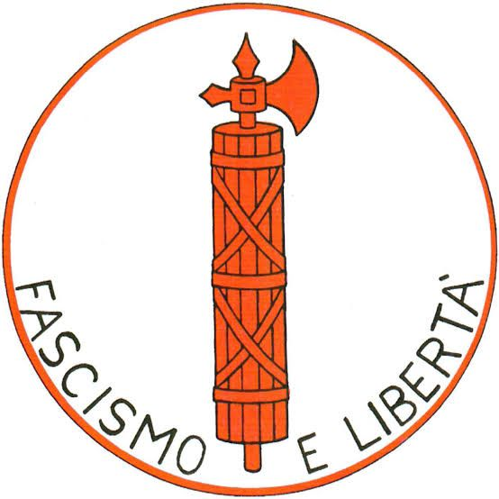
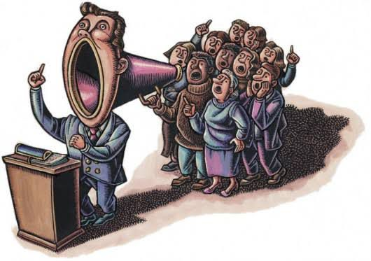
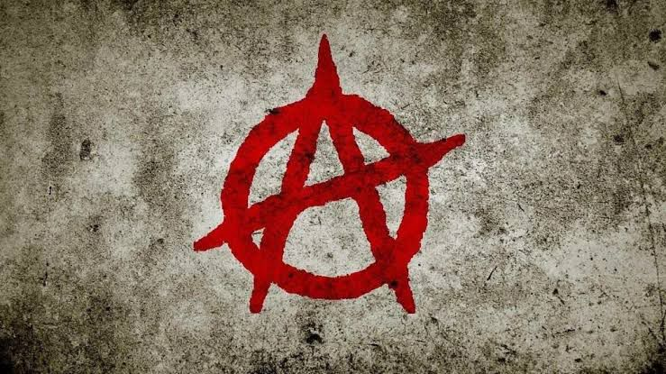
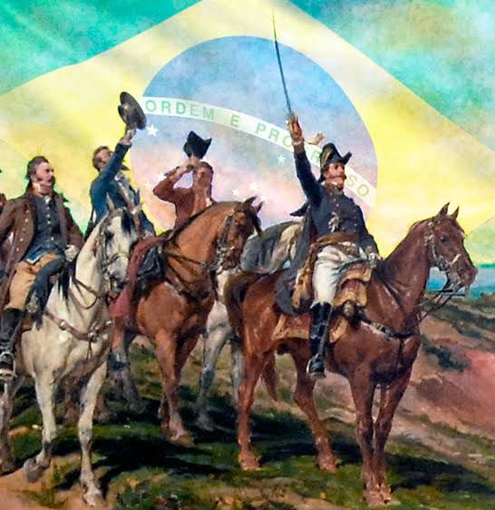

Ideologias políticas
Ideologia é um conjunto de ideias, convicções e princípios filosóficos, sociais
e políticos que caracterizam o
pensamento de um indivíduo, grupo, movimento, época ou sociedade.
Uma ideologia estabelece valores e preferências de um grupo e inclui um programa de ação para a
execução dos objetivos definidos.
Abaixo estão listados os principais tipos de ideologias
políticas e as suas características:
Liberal Clássica e Neoliberal

- Plena fé nos direitos, liberdade e individualidade.
- Defende políticas e ações destinadas a proteger os valores sociais.
- Acredita que o Estado precisa ter pouco controle sobre o indivíduo.
- Considera a livre concorrência, o livre comércio e a liberdade de escolha como os três princípios básicos de uma sociedade livre e a chave para o progresso.
- Se opõe fortemente às ideologias de totalitarismo, do fascismo, nazismo e comunismo, pois acredita serem ideias que aniquilam a liberdade individual.
- Rejeita a ideia de controle total do Estado ou mesmo de controle excessivo sobre o indivíduo.
Facista

- Nacionalismo extremo e militarista.
- Desprezo pela democracia eleitoral e a liberdade política e cultural.
- Crença na hierarquia social natural e o domínio das elites.
- Desejo por Volksgemeinschaft , expressão alemã traduzida por “comunidade do povo”, onde os interesses individuais seriam subordinados ao bem da nação.
Socialista
- A propriedade dos meios de produção (fábricas, terras, etc.) não pertence a indivíduos ou empresas privadas, mas sim à comunidade como um todo. Essa propriedade pode ser pública, cooperativa ou de outras formas que garantam o controle social sobre os recursos produtivos.
- A riqueza gerada pelo trabalho é distribuída de forma mais justa entre todos os membros da sociedade, através de mecanismos como impostos progressivos, programas sociais e serviços públicos universais.
- O socialismo busca reduzir as desigualdades sociais de renda, classe, gênero, raça e outras formas de discriminação. Isso é feito através de políticas que promovem a igualdade de oportunidades e o acesso universal a direitos básicos como educação, saúde e moradia.
- A solidariedade é um valor fundamental no socialismo, que se baseia na ideia de que todos os membros da sociedade são interdependentes e devem cooperar uns com os outros para o bem comum.
Comunista
- Os meios de produção (fábricas, terras, etc.) não pertencem a indivíduos ou empresas privadas, mas sim à comunidade como um todo. Isso significa que a riqueza gerada pelo trabalho é distribuída de forma mais justa entre todos os membros da sociedade. * A propriedade privada de bens de produção é abolida, e os bens de consumo são distribuídos de acordo com as necessidades de cada indivíduo.
- O Estado, como instrumento de dominação de uma classe sobre outra, é considerado desnecessário em uma sociedade comunista. As pessoas se autogovernariam através de um sistema de democracia direta.
- A riqueza gerada pelo trabalho é distribuída de forma igualitária entre todos os membros da sociedade, através de mecanismos como a abolição do dinheiro e a distribuição direta de bens e serviços.
- As classes sociais, como a burguesia e o proletariado, são consideradas produtos da propriedade privada e da exploração de uma classe sobre outra. Em uma sociedade comunista, todas as pessoas seriam iguais em termos de direitos e oportunidades.
Qual a diferença entre socialismo e comunismo?
- Socialismo é o estado intermediário que antecede a implantação do comunismo. O comunismo é
quando o socialismo “deu
certo”, ou seja, chegou no o estágio final, em que o capitalismo é superado. A implantação
do comunismo viria
acompanhada da abolição do Estado, da propriedade privada e também das classes sociais.
- Socialismo é o estado intermediário que antecede a implantação do comunismo. O comunismo é quando o socialismo “deu certo”, ou seja, chegou no o estágio final, em que o capitalismo é superado. A implantação do comunismo viria acompanhada da abolição do Estado, da propriedade privada e também das classes sociais.
Democrática

- Defende a garantia da igualdade de oportunidades a partir de políticas sociais, sem, no entanto, acabar com a propriedade privada.
- Acredita que o Estado deve intervir na economia para corrigir desigualdades produzidas pelo livre mercado.
- Almeja o bem-estar social sem revolução socialista e sem prescindir do capitalismo.
- Seus principais valores são igualdade e liberdade.
- Defende que o Estado garanta um padrão mínimo de vida, como uma rede de segurança para os indivíduos.
Capitalista

- O Estado intervém pouco no mercado de trabalho.
- O trabalhador é assalariado.
- Os proprietários controlam os fatores de produção e obtêm sua renda de sua própria propriedade.
- Exige uma economia de mercado livre para ter sucesso e distribui bens e serviços segundo as leis de oferta e demanda.
- Há divisão de classes sociais.
- A propriedade privada predomina.
Conservadora
- Os valores: liberdade política e econômica e ordem social e moral.
- É fundamentado na doutrina cristã e tem na religião a sua base.
- Acredita que apenas o sistema político-jurídico garante a igualdade necessária entre as pessoas.
- Acredita na meritocracia, onde a desigualdade social é consequência das diferenças entre os indivíduos e seus esforços.
- Acredita que qualquer mudança deve ser leve e gradual.
Anarquista

- Estabelecimento de uma sociedade sem classes, formada por livres e iguais.
- Condena a existência da polícia e forças armadas.
- Acredita que os partidos políticos devem ser extintos.
- Defendem uma sociedade baseada na liberdade total, porém responsável.
- É contra qualquer tipo de dominação, seja ela religiosa, econômica, política ou social.
- É a favor da igualdade, seja ela de raça, gênero, político, econômico e social.
Nacionalista

- Enaltece o país, sua cultura, história e povo.
- Os interesses da nação estão acima dos interesses do indivíduo.
- Defende a cultura de pertencimento e a identificação com a pátria.
- Acredita na preservação da nação e no cuidado das fronteiras do país.
- Manutenção da língua nativa e das manifestações culturais.